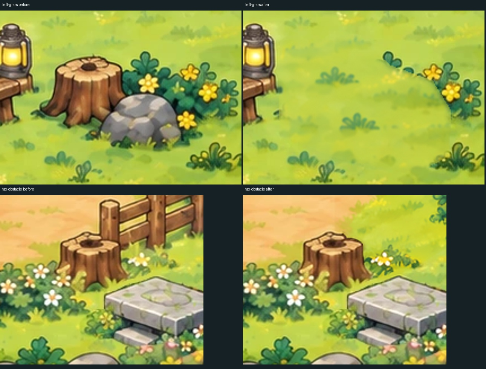
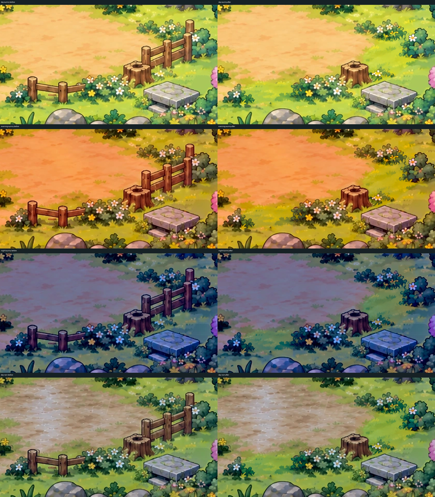
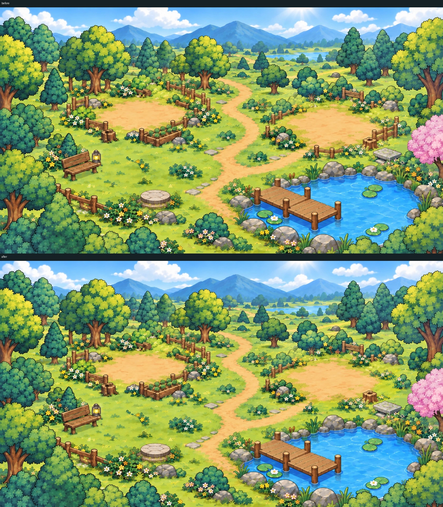
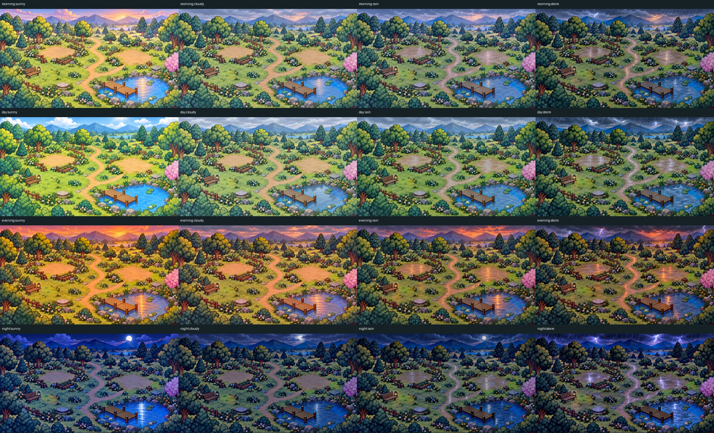
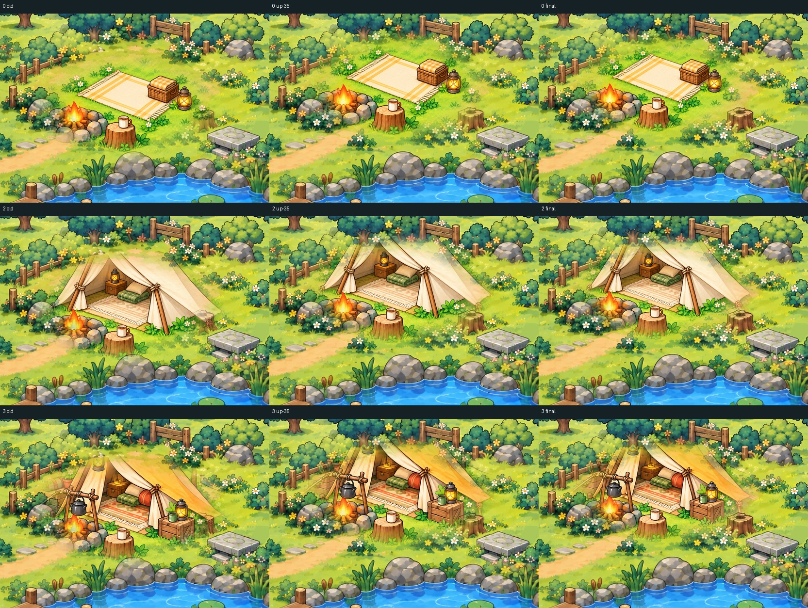
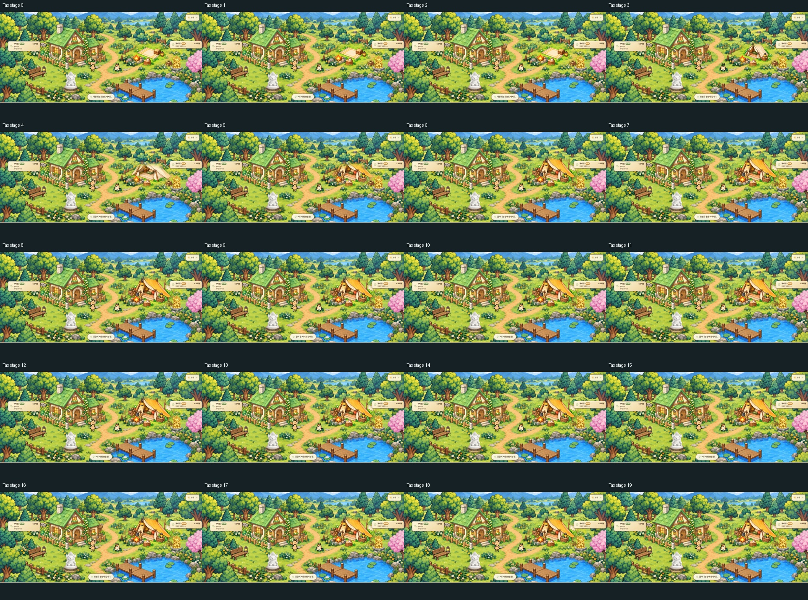
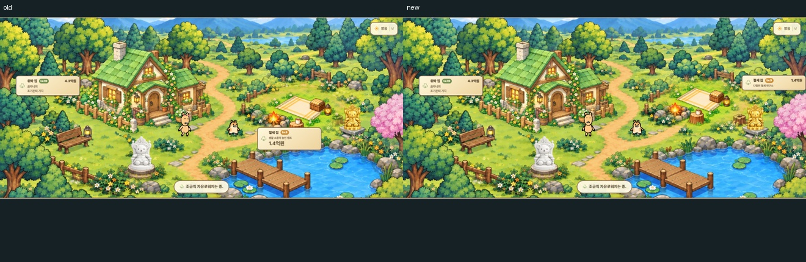
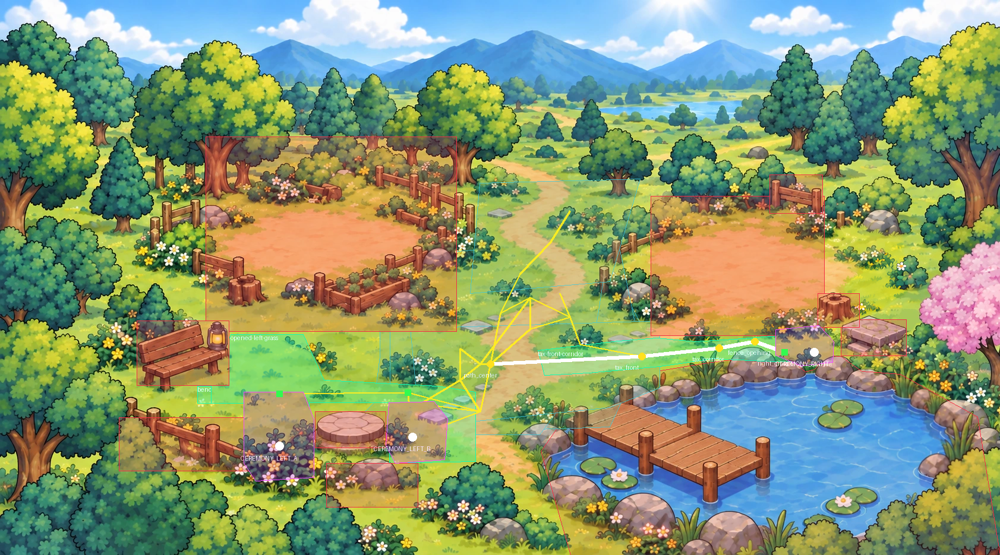
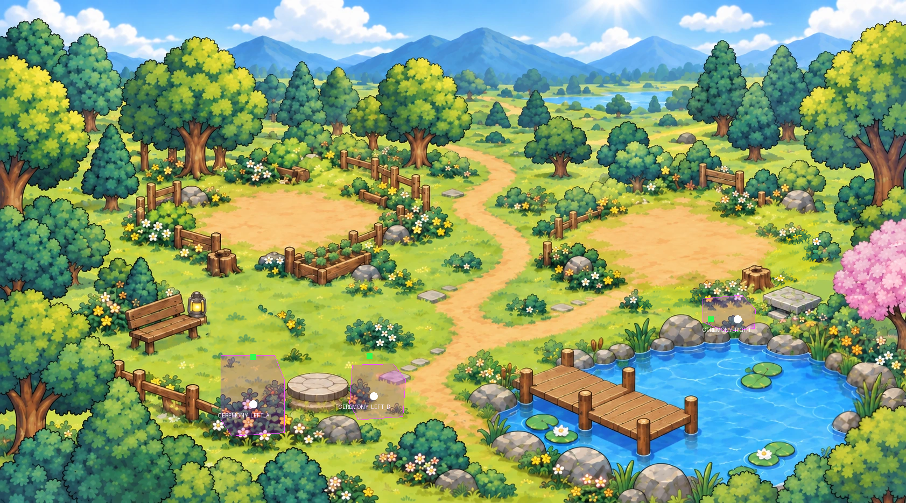
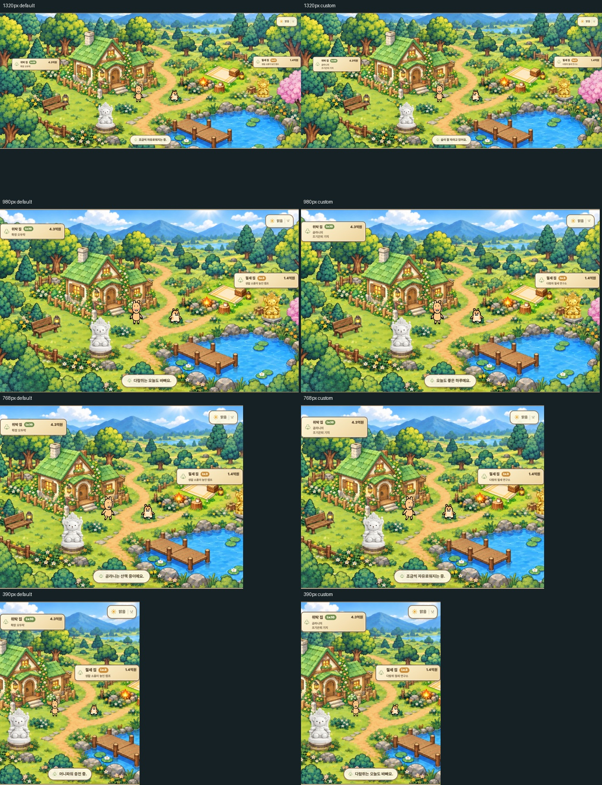

Money Level World Settings v2
Live Firebase login and real Android device QA not run. LEFT stump/rock and RIGHT foreground fence are intentionally removed in separate masks. Stump and rear fences remain. Outside both masks, decoded pixels equal starting main exactly. The white navigation route passes through the removed fence opening.
LEFT stump/rock local repair; retained right stump

RIGHT foreground fence removal: 300% crops in four appearances

Day Sunny source scene before / after RIGHT patch (LEFT WIP retained)

16 appearances (outside both masks exact)

Tax current / largest white / largest shipped artwork: old, Y-up, final

All 20 Tax stage mappings

Tax banner before / after

Navigation source map: cyan regions / yellow graph / red obstacles

Three Ceremony zones / white anchors / green exits

1320 / 980 / 768 / 390 DEFAULT + CUSTOM

390 actual browser simulated touch to right